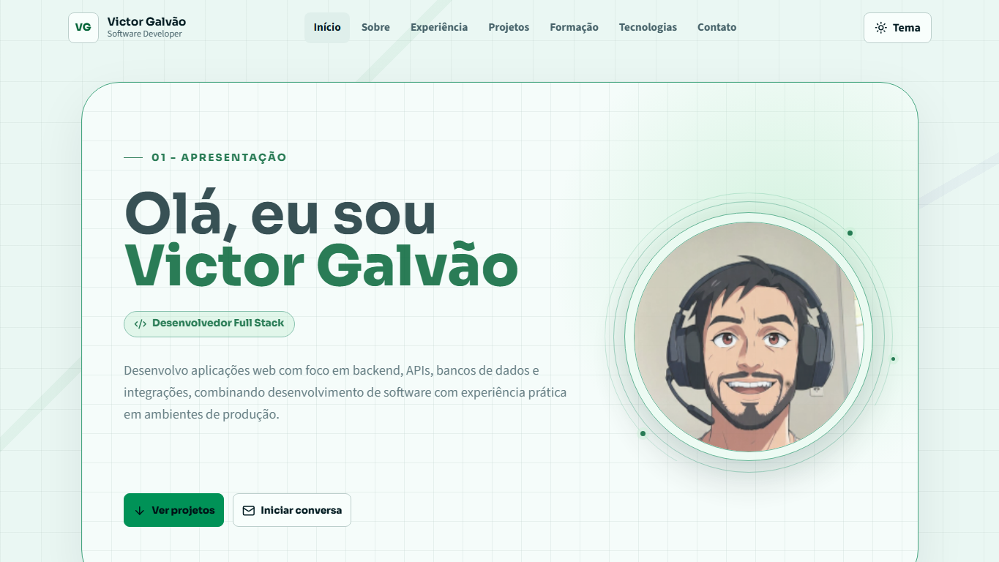
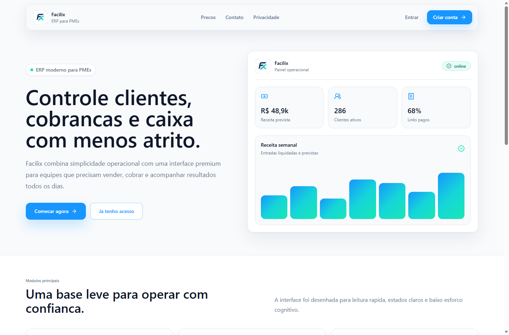
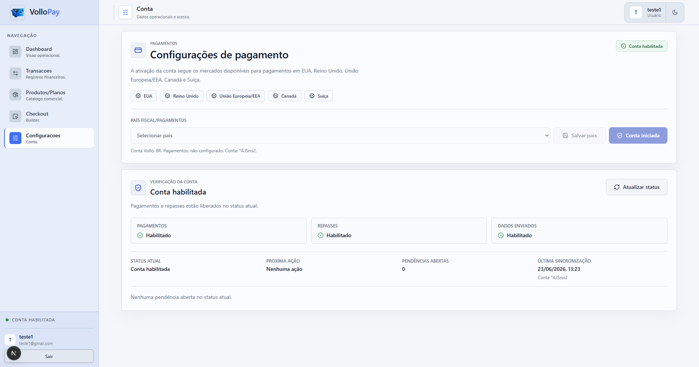
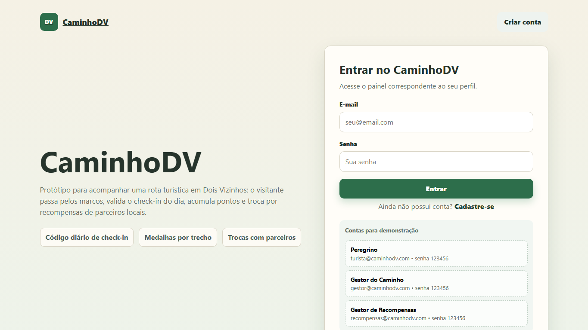

Jogos
Gosto de jogos que envolvem estratégia e competição.
01 - Apresentação
Desenvolvedor Full Stack
Desenvolvo aplicações web com foco em backend, APIs, bancos de dados e integrações, combinando desenvolvimento de software com experiência prática em ambientes de produção.
02 - Sobre mim
Sou Victor Galvão, estudante de Engenharia de Software na UTFPR e desenvolvedor Full Stack com foco em Backend. Tenho experiência com desenvolvimento de aplicações web, APIs, bancos de dados, autenticação e integrações entre sistemas.
Minha experiência anterior com Cloud, infraestrutura e observabilidade complementa meu perfil, trazendo uma visão prática sobre disponibilidade, troubleshooting e funcionamento de aplicações em produção.
Gosto de jogos que envolvem estratégia e competição.
Música faz parte do meu dia a dia, principalmente enquanto estudo, desenvolvo ou relaxo.
Gosto de praticar esportes para relaxar e interagir com amigos.
Gosto de cozinhar e experimentar novas receitas.
Currículo
Visualize meu currículo sem sair do portfólio ou baixe a versão mais recente.
03 / Experiência profissional
Atuação com monitoramento de aplicações e infraestrutura, análise de incidentes, troubleshooting, escalonamento N1/N2 e acompanhamento de sistemas em produção. A experiência complementou minha visão como desenvolvedor sobre disponibilidade, observabilidade e operação de aplicações reais.
Desenvolvimento e evolução de funcionalidades para sistema ERP web, com foco em lógica de negócio, manutenção de sistemas, banco de dados e melhoria contínua da aplicação.
04 / Projetos
Projetos em construção
Experiência autoral criada para apresentar minha trajetória com navegação acessível, temas claro e escuro, conteúdo em três idiomas e atenção especial aos detalhes de interface.
Design, desenvolvimento e conteúdo

Ver projetoMarketplace / Plataforma Web
Plataforma web construída como projeto prático de engenharia de software, com arquitetura de marketplace, autenticação, banco de dados, integrações externas e fluxo de pagamentos.
Conectar compradores e vendedores em um ambiente web com contas, pagamentos, APIs e regras de marketplace.
Vendedores, compradores, OAuth, gateway de pagamento, webhooks, autenticação, APIs REST e deploy.

Ver projetoFrontend / Onboarding / Stripe Connect
Participei do desenvolvimento do VolloPay, uma plataforma de onboarding e habilitação de vendedores para pagamentos. Minha atuação incluiu a criação da landing page, telas de login e cadastro e o fluxo de KYC na área de configurações, utilizado para coletar os dados necessários para conexão e habilitação da conta na Stripe.
Landing page, telas de login e cadastro/registro, participação no fluxo de autenticação relacionado a essas telas e KYC em Configurações para coletar dados necessários à conexão e habilitação da conta via Stripe Connect.
O VolloPay inclui onboarding de sellers, autenticação, área privada, configuração de conta, KYC e integração com Stripe Connect. Minha contribuição ficou concentrada em interfaces, formulários e fluxo frontend de onboarding.

Frontend / Next.js / Aplicação Web
Participei do desenvolvimento frontend do Web Pet, uma plataforma web voltada à adoção de animais e conexão com ONGs e protetores. A aplicação foi construída com Next.js, React e TypeScript, integrando APIs para listagem de pets, autenticação e gerenciamento de cadastros.
Atuação no frontend em projeto desenvolvido em equipe, com foco em componentização, interfaces responsivas e integração com APIs REST.
Organização da aplicação através da arquitetura moderna de rotas do Next.js para páginas públicas e áreas autenticadas.
Consumo do backend centralizado utilizando fetch, schemas Zod e autenticação Bearer nos fluxos de dados da aplicação.
Gerenciamento de dados de servidor, cache e invalidação após operações de criação, edição ou exclusão.
NextAuth.js com Credentials Provider, sessões JWT e proteção de rotas administrativas.
React Hook Form integrado ao Zod para validação de dados nos fluxos de login, cadastro e gerenciamento.
Sincronização de filtros e paginação com a URL utilizando nuqs, apoiando catálogo de pets, detalhes dos animais e listagens.
Tailwind CSS, Radix UI e componentes no padrão shadcn/ui para interfaces adaptadas a mobile e desktop.
Outros projetos
Projeto voltado à organização de processos e dados de gestão leiteira, preservado a partir do portfólio atual e apresentado de forma conservadora.
Plataforma de gamificação turística preservada do portfólio existente, com foco em apresentar a ideia e direcionar para o repositório já referenciado.

Ver projeto05 / Formação
UTFPR, Universidade Tecnológica Federal do Paraná
Ensino Médio, São José dos Campos, SP
06 / Tecnologias